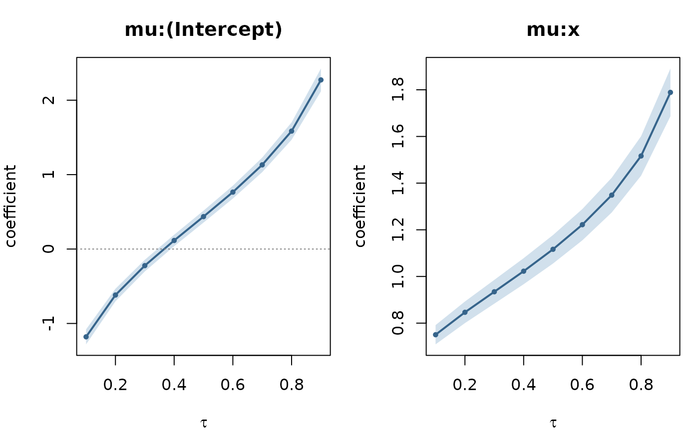
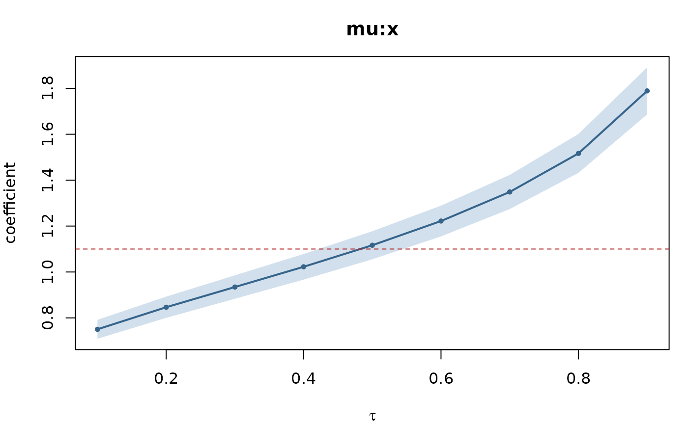
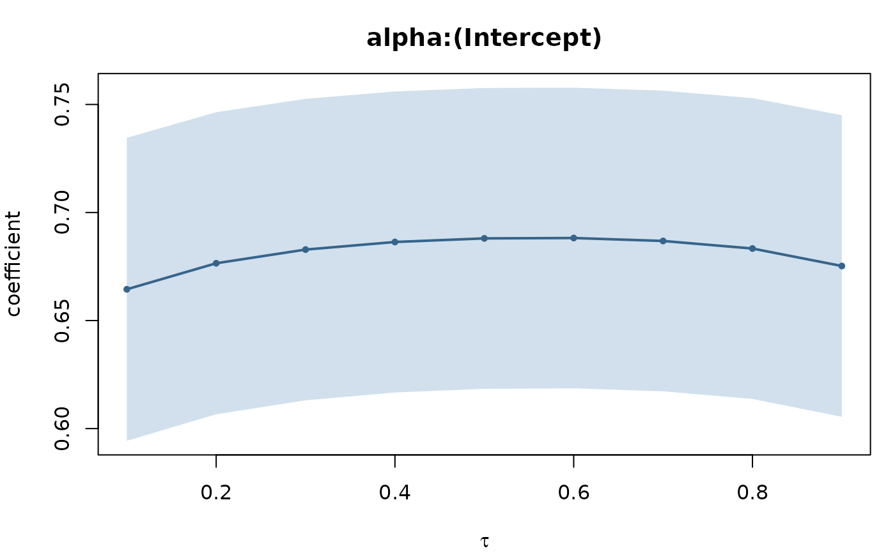
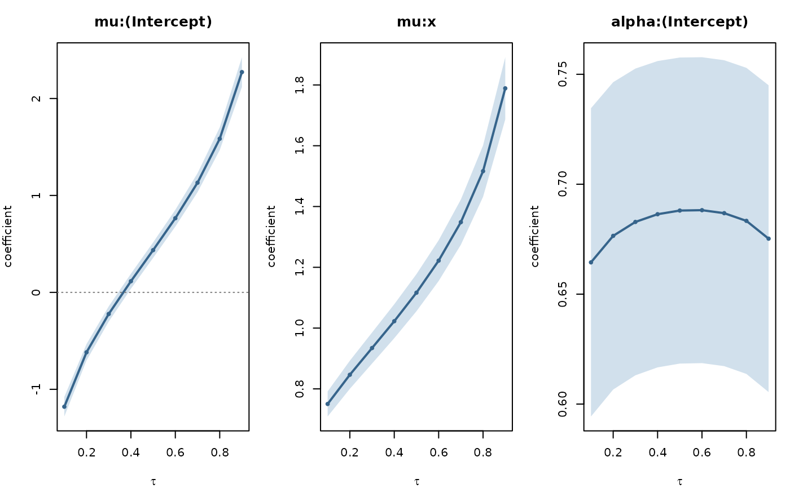
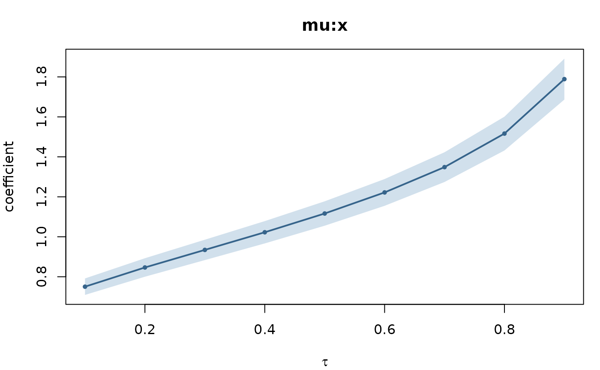

Draws one panel per selected coefficient: the estimated path
\(\hat{\beta}_j(\tau)\) against the quantile level, with a
shaded pointwise confidence band, a dotted line at zero and, optionally, a
dashed reference line. The layout deliberately reproduces the idiom of
quantreg's plot.summary.rqs so that the picture is immediately legible to
readers of the quantile-regression literature.
Arguments
- x
An object of class
"gkwq_process"fromquantile_process(); or, for the"gkwqregs"method, a container of fits, which is passed throughquantile_process()first.- parm
Character vector of coefficient names to draw, matched against
rownames(x$coef)and therefore written in the"part:term"form, for examplec("mu:x", "mu:(Intercept)"). Names that match nothing are dropped silently. WhenNULL(the default) selection falls toparts.- parts
Character vector of formula parts to draw when
parmisNULL; every coefficient belonging to one of these parts is included. Defaults to"mu", the conditional quantile. Useparts = unique(x$parts)for every coefficient in the model, orparts = "alpha"to inspect a shape path.- nrow, ncol
Panel grid. Supply neither and the grid is at most three columns wide with as many rows as needed; supply one and the other is derived. The previous
graphics::par()settings are restored on exit.- reference
Optional numeric vector of horizontal reference values, drawn as a dashed line and included in the vertical range of the panel. It is indexed positionally against all rows of
x$coef, not against the selected subset, so it must have lengthnrow(x$coef)and follow the order ofrownames(x$coef); useNAfor coefficients that need no line. A shorter vector is not recycled and simply produces no line.- ...
Currently unused; accepted for compatibility with the
plotgeneric.
Details
The band drawn is x$lower to x$upper, the pointwise Wald interval at
x$level computed separately at each quantile level. It is not simultaneous
over \(\tau\) and it ignores the dependence between levels induced by
their sharing the same data; see quantile_process() for the full statement.
Read the shape of a path with the warning in quantile_process() in hand.
Under this parametrization the plotted coefficient is the slope of the
link-transformed conditional \(\tau\)-quantile, and that slope is
generically \(\tau\)-varying even when the data-generating process has no
tail heterogeneity at all. A sloping path is therefore not, by itself, evidence
that a covariate matters more in the tail. The reference argument exists so
that a path can be judged against a value that means something – a known
truth, a single-level estimate, or the path implied by a simulated homogeneous
model – rather than against a horizontal line that carries no null hypothesis.
See also
quantile_process(), which constructs the object and documents its
components and its interpretation.
Examples
## Correctly specified kw data with a CONSTANT shape parameter: the
## data-generating process has no tail heterogeneity at all.
set.seed(6)
n <- 1000
x <- runif(n, -2, 2)
mu <- plogis(0.4 + 1.1 * x) # true median, logit slope 1.1
y <- gkwdist::rkw(n, alpha = 2, beta = log1p(-0.5) / log1p(-mu^2))
d <- data.frame(y = y, x = x)
fits <- gkwqreg(y ~ x, data = d, tau = seq(0.1, 0.9, by = 0.1), family = "kw")
qp <- quantile_process(fits)
## Default: every coefficient of the conditional-quantile part.
plot(qp)

## One coefficient, with the true median slope drawn in. The path passes
## through the reference near tau = 0.5 and rises steadily away from it in
## both directions -- from 0.750 at tau = 0.1 to 1.789 at tau = 0.9. That is
## correct behaviour and NOT tail heterogeneity: the simulation has none.
ref <- rep(NA_real_, nrow(qp$coef))
names(ref) <- rownames(qp$coef)
ref["mu:x"] <- 1.1
plot(qp, parm = "mu:x", reference = ref)

## The shape path is the row that does carry the heterogeneity question, and
## here it is flat to within 0.025, as it should be for a constant alpha.
plot(qp, parts = "alpha")

round(qp$coef["alpha:(Intercept)", ], 3)
#> 0.1 0.2 0.3 0.4 0.5 0.6 0.7 0.8 0.9
#> 0.664 0.677 0.683 0.686 0.688 0.688 0.687 0.683 0.675
#> 0.1 0.2 0.3 0.4 0.5 0.6 0.7 0.8 0.9
#> 0.664 0.677 0.683 0.686 0.688 0.688 0.687 0.683 0.675
## Every coefficient of the model, in a single row of panels.
plot(qp, parts = unique(qp$parts), nrow = 1)

## A container plots itself by calling quantile_process() first.
plot(fits, parm = "mu:x")
